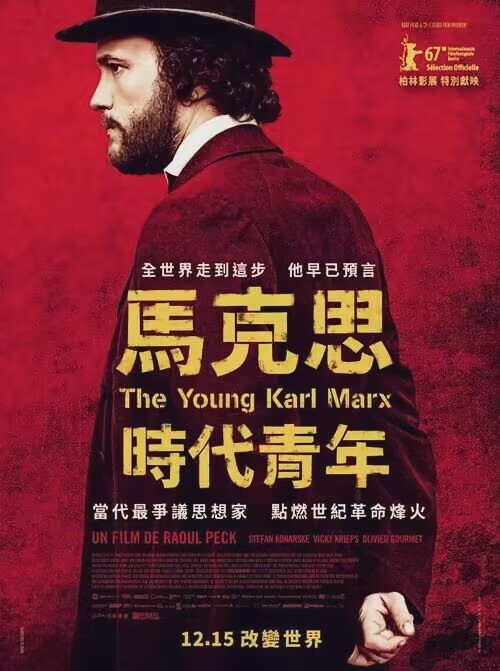

《青年马克思》

《青年马克思》这部影片描绘了26岁的卡尔・马克思与恩格斯在巴黎的传奇相遇，以及二人共同推进马克思主义哲学和社会科学理论的经过。
影片还还原了《共产党宣言》诞生的艰辛过程：描写了马克思和恩格斯如何通过自己的所见所思探索新的哲学和社会科学理论，如何在当局的查禁和社会的阻力下探求真理，又是如何不畏权威、并扭转了空想社会主义的错误指导，最终团结了各地工人运动的代表，确立了马克思主义在国际工人运动中的纲领地位。
自此，国际工人运动有了正确的理论指导，而工人阶级也作为一个进步自觉的阶级改变了此后的世界历史。马克思曾言：“如果我们选择了最能为人类福利而劳动的职业，那么，重担就不能把我们压倒，因为这是为大家而献身；那时我们所感到的就不是可怜的、有限的、自私的乐趣，我们的幸福将属于千百万人，我们的事业将默默地，但是永恒发挥作用地存在下去，而面对我们的骨灰，高尚的人们将洒下热泪。” 他的一生，践行了这句话。 他，认真，他不畏艰难，他胸怀崇高理想。 作为新青年的我们要向他致敬，向他学习。